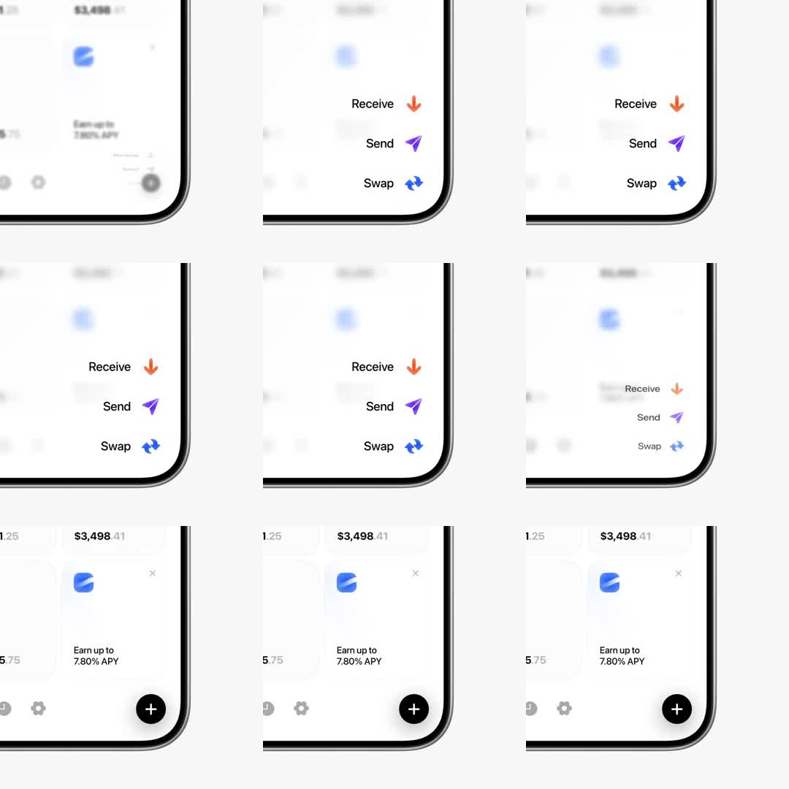

Mobile fintech FAB that expands into a vertical action menu (Receive/Send/Swap) with staggered spring entrances over a blurred backdrop, then collapses back.
Media
Frame-by-frame

0-12%
Resting: home screen with balance card; black circular FAB with white plus bottom-right; background sharp.
12-25%
Tap FAB: backdrop blurs and dims; first item 'Receive' (orange download icon) pops in above FAB with overshoot.
25-45%
'Send' (purple paper-plane) and 'Swap' (blue arrows) cascade in, staggered ~75ms, each scaling 0.5->1 with spring; labels slide in from the right.
45-60%
Menu fully open and settled; backdrop stays blurred.
60-80%
Collapse: items fade/shrink in reverse stagger, labels exit first, icons scale to ~0.3 drifting toward the FAB origin.
80-100%
Backdrop un-blurs; plus icon returns (rotated back). Loop.
Build prompt
Rebuild this interaction 1:1: a mobile fintech FAB that expands into a vertical action menu (Receive / Send / Swap) with staggered spring entrances over a blurred, dimmed backdrop, then collapses back to the plus.
## Integration
Integration: stack-agnostic spec - springs given as stiffness/damping, timed motions as duration + curve, canvas/shader notes are perf guidance only; map every value to your framework and animation library of choice.
## Scene
Mobile home screen with a balance card. Bottom-right: 56px black circular FAB with a white plus. Menu items stack vertically above the FAB: Receive (orange download icon), Send (purple paper-plane), Swap (blue arrows) - each a row with 40px circular icon tile + label to its right.
## Motion spec
Pattern: entrance/exit with stagger choreography.
- Open trigger: tap FAB. Backdrop layer blurs (backdrop-filter blur 12px) and dims (black/30) over 300ms.
- FAB plus rotates to close (0 -> 45deg, 250ms ease-out).
- Items enter: scale 0.5 -> 1, y +12 -> 0, opacity 0 -> 1, spring overshoot cubic-bezier(0.34, 1.56, 0.64, 1); stagger 60-90ms between items, Receive first. Labels slide in from the right (x +8 -> 0) with their icon.
- Full open settles ~450ms after tap.
- Close: labels exit first, icons scale to 0.3 while drifting toward the FAB origin, reverse stagger, total ~300ms, ease-in. Backdrop un-blurs; plus rotates back.
## Calibration
- The overshoot spring (0.34, 1.56, 0.64, 1) is the character of this menu - do not substitute a plain ease-out.
- Stagger 60-90ms: under 50ms reads as simultaneous, over 120ms reads as laggy.
- Close is ~30% faster than open (300 vs 450ms).
## Reduced motion
No spring, no stagger: menu fades in/out as one group, 150ms opacity only. Backdrop still dims (no blur).
## Don't miss
- Items drift toward the FAB origin as they collapse - they do not fade in place.
- The blur lives on a separate backdrop layer behind the menu, never on the page content itself.
- Labels move independently from icon tiles; that separation is what makes the cascade feel choreographed.